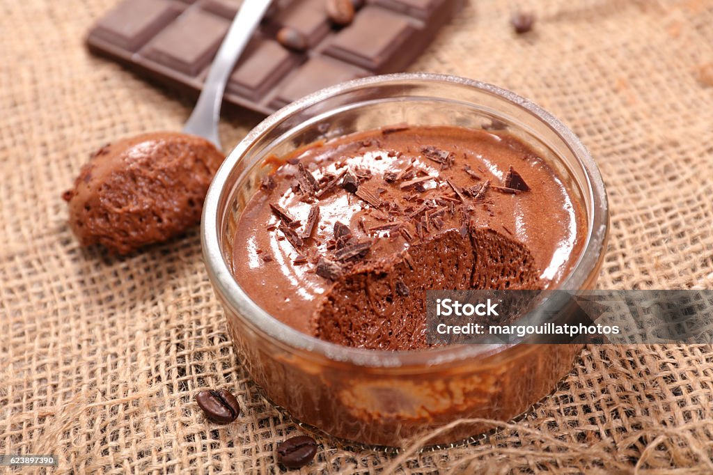

Chocolate Pudding

Chocolate Pudding is a rich, velvety dessert made from silky cocoa or melted chocolate blended into a creamy,
spoon-soft mixture. It has a deep, comforting chocolate flavor with a smooth, melt-in-your-mouth texture.
Served chilled, it’s indulgent,
comforting, and perfect for anyone craving a sweet, chocolatey treat.
Ingredients
- 1 avocado - peeled, pitted, and cut into chunks
- 1 banana, peeled and cut into chunks
- 1 cup unsweetened soy milk
- ¼ cup raw cocoa powder
- 2 tablespoons agave nectar
- 1 teaspoon lemon juice
- ¼ cup shredded unsweetened coconut (Optional)
Instructions
- Place avocado, banana, soy milk, cocoa powder, agave nectar, lemon juice, and coconut into a blender.
- Cover, and puree until smooth.
- Divide into small containers.
- Store in the refrigerator 1 hour until set.
Home